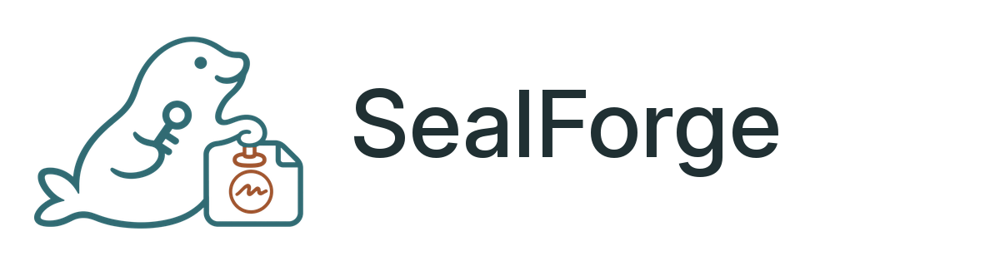
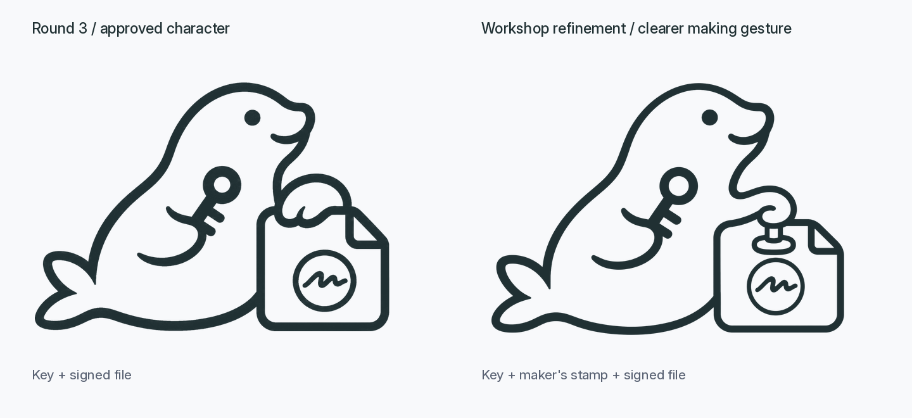
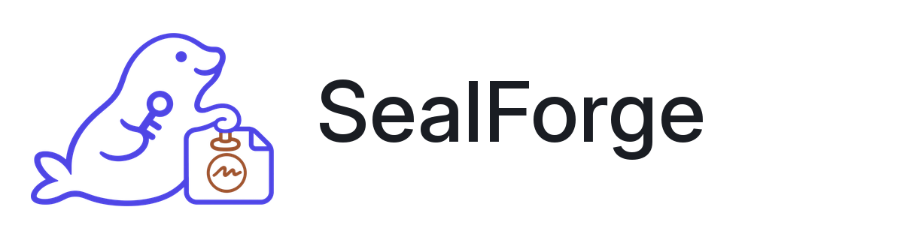
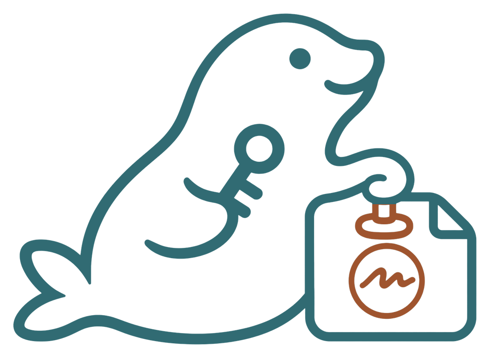
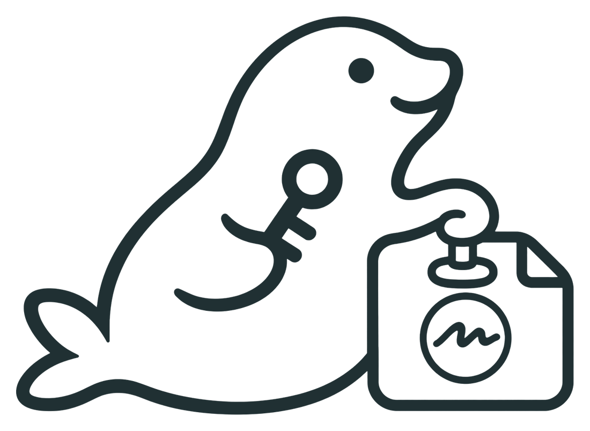

Coast & Copper
Muted petrol for protection. A restrained copper accent for the act of making. Warmer neutrals soften the interface.
Use this preview
ROUND 4 · WORKSHOP REFINEMENT
The same little seal, now clearly making its mark. It keeps the key close and presses a maker’s stamp onto the file.
A calmer identity for keeping keys private and signing code yourself.

The familiar silhouette, calm face and key are retained. This is an evolution of Round 3, not a new mascot direction.
A small stamp turns a passive holder into a maker. Copper connects the tool to its imprint. No hammer, furnace or extra badge is needed.

Shown in one color so the added gesture can be judged independently of the palette.
Muted petrol for protection. A restrained copper accent for the act of making. Warmer neutrals soften the interface.
Keeps the familiar indigo family. The same copper tool and imprint strengthen the workshop story with less palette change.

These are proposed interface tokens, not a recolored application screenshot. Copper is a brand accent, not a replacement for warning or error colors.
One image, not an icon beside separately rendered text.
Self-hosted code signing.
SealForge product siteImage-size preview only. Not tested in mail clients.



At 32 px the stamp and signature details weaken. The full scene is not yet a production favicon; a simplified micro-icon and final vector drawing remain.